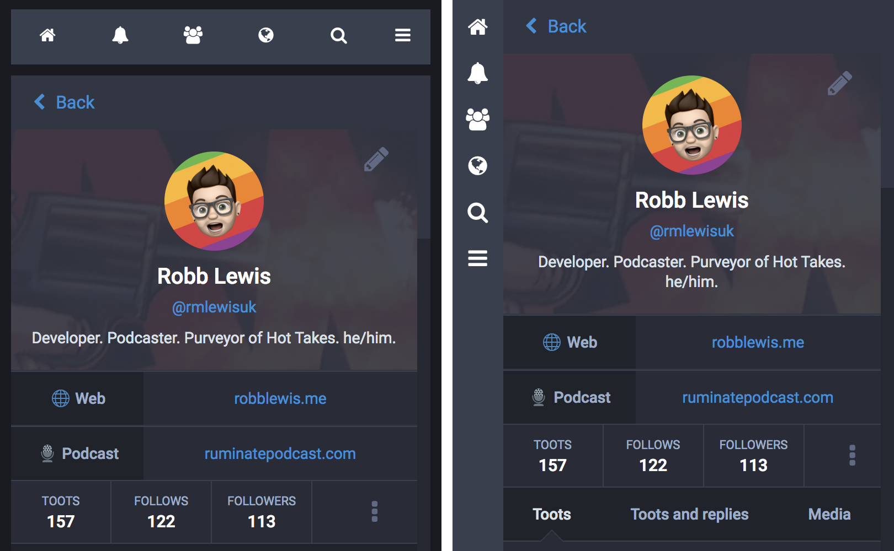
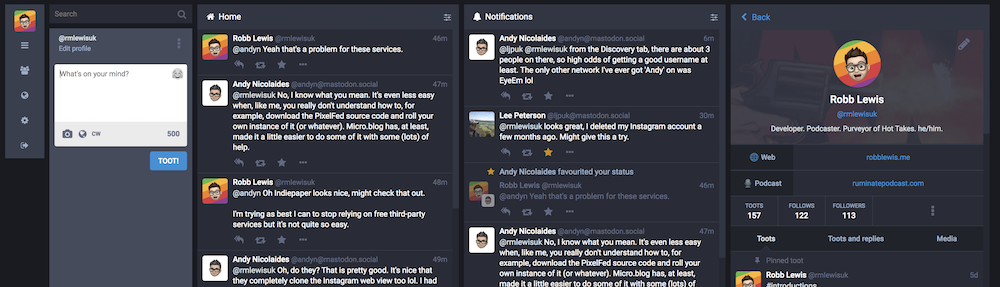
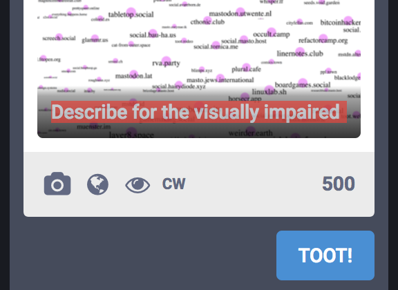
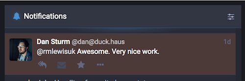
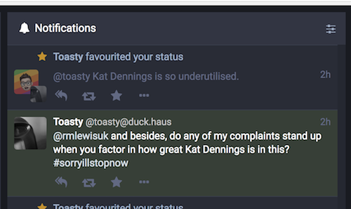
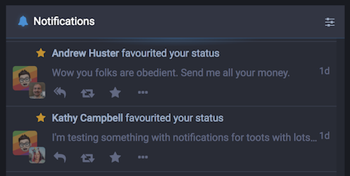
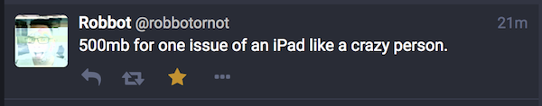

"Tootbot"
single-column.css

- For single column
- Move the navigation to the side
- Remove margin from columns
Desktop Layout
desktop.css

- For multi-column
- Move the navigation to the side
- Increase column widths to fill the screen
- Smaller compose column
Miscellaneous Tweaks
misc.css

- Always show image description box
- If it's empty, show it in red

- Highlight direct messages in main feed and notification column

- Highlight mentions*
- * Only works in the notifications column and not the main feed
- Requires Mastodon 2.5

- Collapse boosts and favourites

- Hide reply counts (> v2.5)
How to use
- If you run your own Mastodon instance running v2.5 or higher, you can add custom CSS on the admin dashboard.
- For Chrome, I recommend Control Freak
- For Safari, you can add a custom stylesheet in preferences.